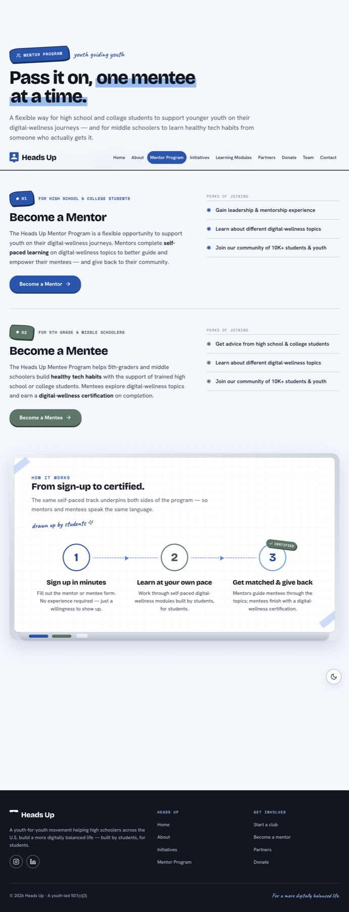
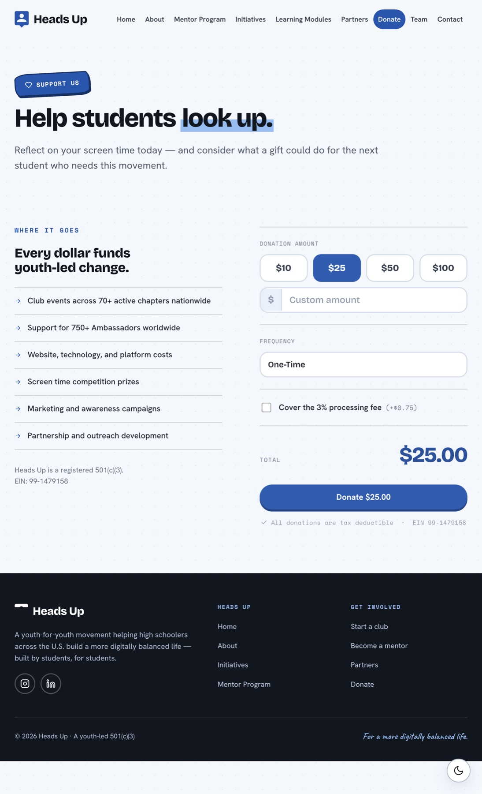
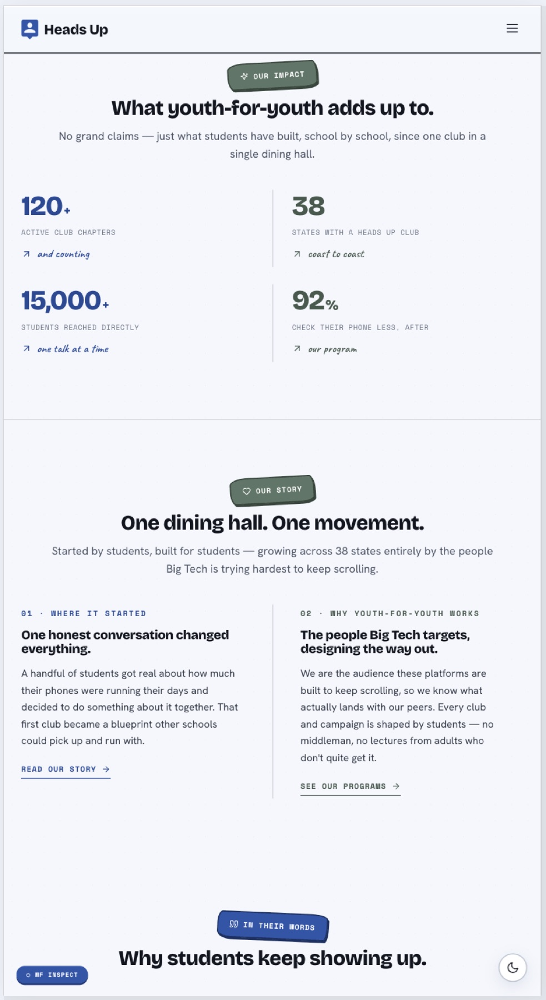
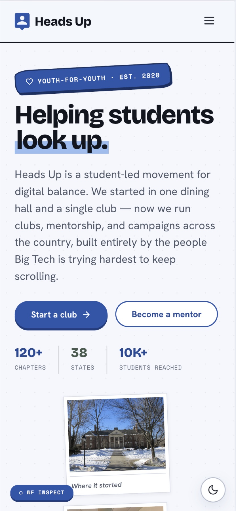
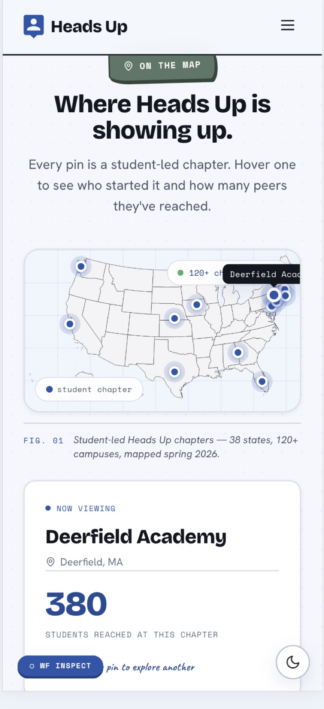
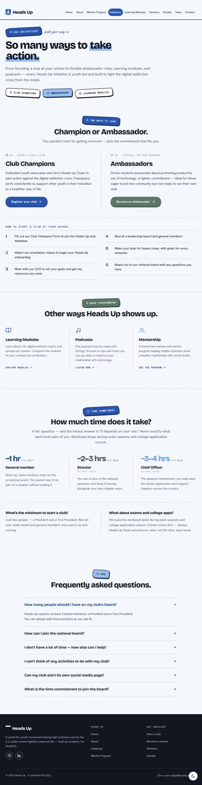

01 / 09
2026
A redesign for Heads Up, a student-led nonprofit for healthier screen habits. My direction was chosen from three, and I built it in Webflow along with a small helper tool for the rebuild.
All work